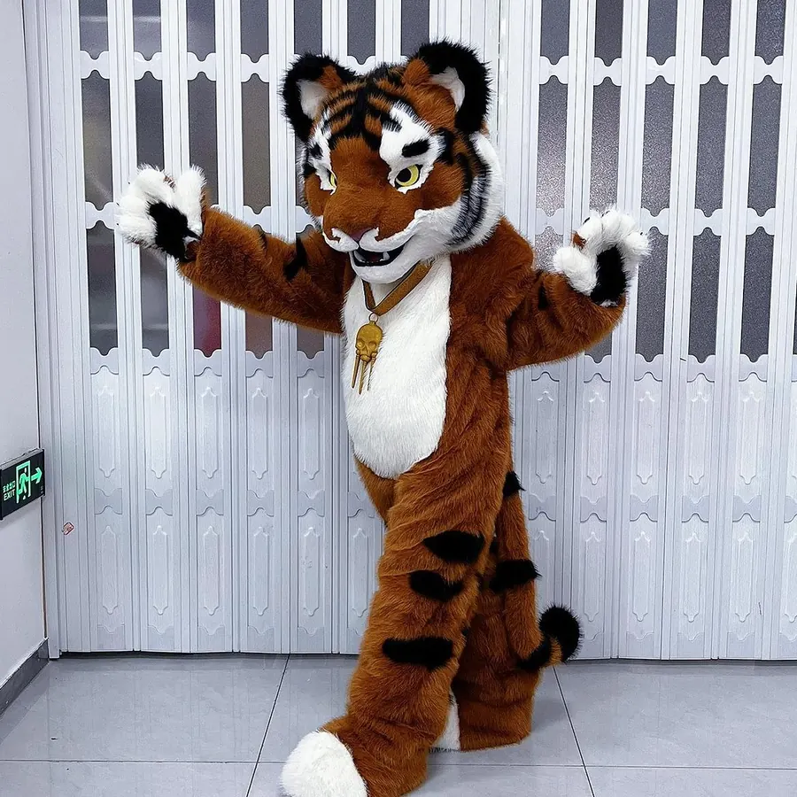

头部结构决定互动体验
人偶头部需要同时考虑造型比例、视线高度、通风散热、重量分布和内部固定。头太重会影响演员行动，视线太低会增加现场碰撞风险。彩云端定制会根据角色形象选择泡沫雕刻、3D结构、支撑骨架和轻量材料，让外观和穿戴体验保持平衡。
身体部分要控制活动范围
商场和乐园活动中，演员经常需要挥手、合影、走动甚至简单舞蹈。身体结构、手臂长度、腿部开口和脚套防滑都要提前设计。毛绒、仿皮革、海绵和内衬材料也要按使用频率选择，避免穿几场就变形或开线。
材料选择影响维护成本
品牌吉祥物经常多城市巡演或长期门店使用，面料的耐磨、抗污、可清洁和可修补非常重要。浅色毛绒视觉好，但清洁压力更大；复杂配件识别度高，但运输和维修成本也更高。合理的材料组合可以降低后期运营成本。
适合定制的应用场景
- 购物中心周年庆、儿童节、节庆巡游和开业活动。
- 品牌IP发布会、快闪店、门店促销和线下互动。
- 主题乐园、文旅景区、动物主题活动和亲子演出。
- 漫画展、动漫嘉年华和城市商业活动中的角色互动。
结语
吉祥物人偶服装定制要把视觉还原、安全穿戴和维护使用一起考虑。彩云端定制可为品牌、商场和文旅客户提供人偶形象设计、服装道具制作和项目交付服务。